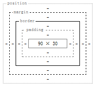
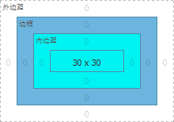

在 CSS 2.1 规范中自动表格布局规则中，计算每个单元格的最小内容宽度（MCW）：经格式化的内容可以扩展到多行，但是不可以溢出单元格框。如果指定的单元格 'width'（W）大于 MCW ，W 将作为最小单元格宽度。 'auto' 意味着 MCW 为最小单元格宽度。
关于自动表格布局的更多信息，请参考 CSS 2.1 规范 17.5.2.2 Automatic table layout 。
规范中仅描述了指定单元格 'width'（W）大于 MCW ，W 将作为最小单元格宽度，并没有描述指定的单元格宽度小于当前列 MCW 时，谁作为最小单元格宽度。
指定的单元格宽度小于当前列 MCW 时， Chrome(Q) Safari(Q) Opera(Q) 计算单元格与其他浏览器不同，会造成布局不一致。
| 所有浏览器 |
|---|
代码如下：
<html> <body> <table style="width:180px;" cellpadding=0 cellspacing=0> <tr>
<td style="background:green;"><div style="width:10px;height:30px;"></div></td>
<td style="background:gold;"><div style="width:20px;height:30px;"></div></td>
<td style="background:pink;"><div style="width:30px;height:30px;"></div></td>
</tr> <tr> <td style="background:blue;"><div
style="width:10px;height:30px;"></div></td> <td style="background:silver"><div
style="width:20px;height:30px;"></div></td> <td
style="background:red;width:10px;"><div style="width:30px;height:30px;"></div></td>
</tr> </table> </body> </html>
在每个 TD 中都放了设置宽度的 DIV 用来模拟单元格的最小宽度，给最后一个 TD 上明确指定宽度（10px），并使其宽度小于单元格最小宽度。
在各浏览器中效果如下：
| Chrome(Q) Safari(Q) Opera(Q) | IE Firefox Chrome(S) Safari(S) Opera(S) | |
|---|---|---|
| 页面截图 | ||
| 明确指定宽度的 TD 开发者工具下截图 |  |  |
| 从左至右 TD 的宽度依次为 | 30px 60px 90px | 50px 100px 30px |
根据现象可以推测，
注：本例子中取值均为整数，是为了清楚的说明这个问题，实际 TD 的计算后宽度可能会有一些偏差。
避免出现明确指定的单元格宽度小于当前列 MCW 的情况。
| 操作系统版本: | Windows 7 Ultimate build 7600 |
|---|---|
| 浏览器版本: |
IE6
IE7 IE8 Firefox 3.6.10 Chrome 7.0.552.0 dev Safari 5.0.2 Opera 10.63 |
| 测试页面: | specify_TD_width.html |
| 本文更新时间: | 2010-10-13 |
自动表格布局 MCW TD width